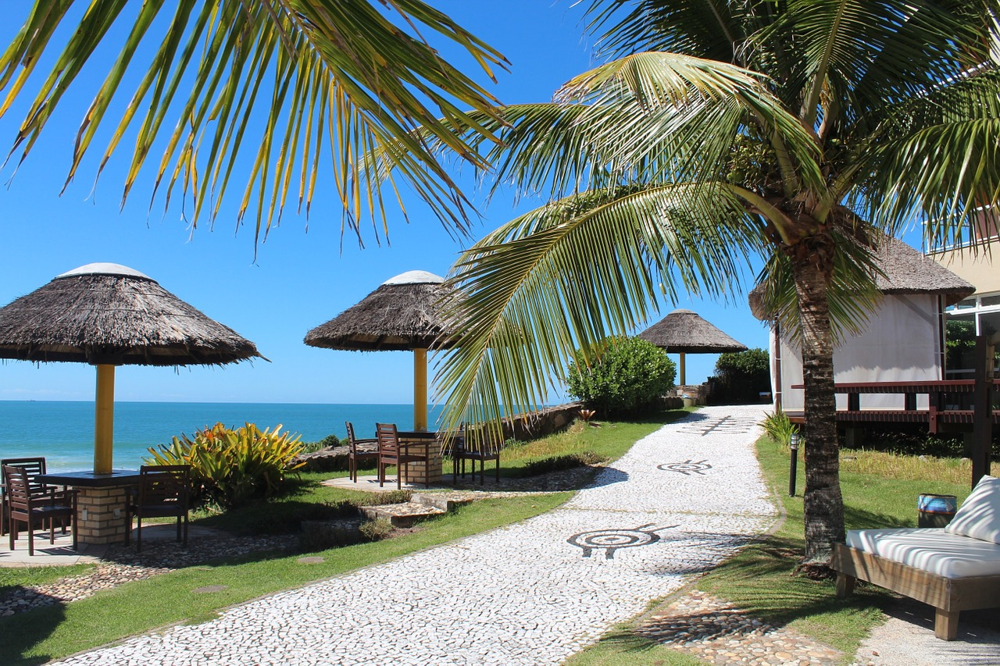

Sobre a Multi Viagens
Um projeto acadêmico para inspirar viagens.
O site reúne páginas de destinos, hospedagens, cruzeiros, voos demonstrativos e dicas de viagem.
Sobre o protótipo
Uma experiência para explorar ideias de viagem.
Este projeto organiza conteúdos de turismo em uma navegação mais simples, com páginas adaptadas a diferentes tamanhos de tela e formulários demonstrativos.
As buscas, tarifas, hospedagens, reservas e envios de mensagens não estão conectados a serviços externos. Os conteúdos servem como demonstração visual e ponto de partida para uma futura integração.
Explorar dicas